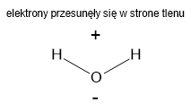

Aby atom był 'szczęśliwy' musi zdobyć 2 lub 8 elektronów na ostatniej powłoce. Aby tego dokonać tworzą wiazania chemiczne
Wyróżniamy kilka typów wiązań chemicznych:
Kowalencyjne
spolaryzowane
niespolaryzowane
Koordynacyjne(Donorowo-akceptorowe)
Jonowe
Metaliczne
Kowalencyjne
Te wiązania polegają na uwspólnieniu elektronów walencyjnych.
Przykład 1
H• •H
Mamy 2 wodory z 1 elektronem walencyjnym każdy. Kiedy chcą sie połaczyc to dają je na wspólne konto.
H •• H
Teraz każdy wodór ma po 2 elektrony
(H ••) H
H (•• H)
Przykład 2
H• •••O••• •H
Mamy teraz wodor i tlen. Robimy tak samo:
(H ••) ••O•• (•• H)
Wodory mają 2 elektrony (cieszą sie), a co z tlenem?
H (•• ••O•• ••) H
Tlen ma 8 wiec też sie cieszy!
Wiązania kowalencyjne dzielimy na spolaryzowane i niespolaryzowane. Polaryzacja polega na rozlozeniu ladunku ujemnego i dodatniego na 2 stronach cząstki.
Aby poznac typ wiązania musimy sprawdzic różnice w elektroujemności(siły pierwiastka). Pierwiastki przeciągają te elektrony. Im wieksza różnica tym bardziej są spolaryzowane.
Różnica x<0.4 to wiązanie niespolaryzowane
Różnica 0.4>x<1.7 to wiązanie spolaryzowane
Popatrzmy na przykład 1, elektroujemnośc wodoru to 2,2. Różnica miedzy 2,2(wodorem) a 2,2(drugim wodorem) jest równa 0, bo 2.2 - 2.2 = 0. To znaczy że to wiązanie niespolaryzowane (jest za mała różnica w przeciąganiu elektronów ze jest remis i nikt ich nie przygarnia)
Teraz przykład 2, elektroujemnośc tlenu to 3,5. Teraz róznica miedzy elektroujemnościa to 3,5 - 2,2 = 1,3 co znaczy ze tlen przeciąga na swoją strone elektrony(ładunek ujemny) to znaczy ze staje sie biegunem ujemnym a wodór który jest dalej od elektronów ma ładunek dodatni.

Cząsteczka wody ma biegun dodatni i ujemny czyli jest spolaryzowana/polarna
Wiązania jonowe
Tutaj już nie powiemy o uwspólnianiu elektronów tylko o brutalnym przeciąganiu i zabieraniu. Kiedy różnica elektroujemnosci(siły) wynosi przynajmniej 1,7 to już nie ma żartów. Atom wyrywa eletron od drugiego i zyskuje ładunek ujemny(analogicznie ofiara zyskuje dodatni). Atom gdzie liczba protonów ≠ liczbie elektronów jest nazywany jonem. Jon dodatni(który ma za malo elektronów) nazywa sie kation. Jon ujemny(ktory ma za duzo elektronów) nazywa sie anion.
Przykład 1
Na• •Cl••••••
Chlor który ma elektroujemnośc 3,0 brutalnie wyrywa elektron sodu który ma elektroujemności tylko 0,9. (Różnica wynosi 3,0 - 0,9 = 2,1)
Na ••Cl••••••
Na (••Cl••••••)
Chlor sie cieszy bo ma 8 elektronów walencyjnych ale sód też. Czemu? Konfiguracja elektronowa sodu to K2L8M1. To znaczy że jak straci 1 elektron z powłoki M to zostaje mu K2L8 czyli 8e- walencyjnych!
(••••••••Na) (••Cl••••••)
Ale sód ma teraz za malo elektronów o 1 a chlor ma za duzo o 1. Sód stał sie kationem a chlor anionem
Jony zapisuje sie tak XYZ
X - Symbol pierwiastka np. Ca
Y - Różnica miedzy elektronami a protonami
Z - + lub - w zależności od tego czego jest wiecej(jak elektronow to - jak protonow to +)
Podajmy na przykładzie 3 jonów
K2L8 gdzie protonów jest 9
K2L8 gdzie protonów jest 12
K2L8M8 gdzie protonów jest 19
1 przyklad - mamy 9p+ i 10e-. Jest to fluor(F) bo ma 9p+. Teraz liczymy różnice 10 - 9 = 1 (F1). Teraz ładunek - elektronów jest więcej czyli F1-. (WAŻNE: jak mamy ładunek 1+ lub 1- to zapisujemy bez 1).
Wynik: F-
2 przyklad - mamy 9p+ i 12e-. Jest to magnez(Mg) bo ma 12p+. Teraz liczymy różnice 12 - 10 = 3 (Mg3). Teraz ładunek - elektronów jest mniej czyli Mg2+.
Wynik: Mg2+
3 przyklad - mamy 19p+ i 18e-. Jest to potas(K) bo ma 19p+. Teraz liczymy różnice 19 - 18 = 1 (K1). Teraz ładunek - elektronów jest mniej czyli K1+ czyli K+.
Wynik: K+
W. jonowe
W. Kowalencyjne sp
W. Kowalencyjne nsp
Między jakimi pierwiastkami wystepuje
Metal-Niemetal
Niemetal-Niemetal
Niemetal-Niemetal
Od jakiej różnicy elektroujemnosci(ΔE) występuje
ΔE = 1,7
ΔE = 0,4
ΔE = 0
Wiązania Metaliczne
Są to wiązania między metalem a metalem. Wiązanie to jest zdelokalizowane(elektrony ruszają sie między atomamy i nie dokonca wiadomo gdzie są). Wiązania metaliczne odpowiadają za wiele właściwości substancji.
Atomy metalu występują jako kationy bo oddają swoje elektrony . Elektrony sie znajduja wtedy w "Gazie elektronowym"(chmurze elektronowej)
Wiązanie występuje tylko w cieczach i ciałach stałych.
Właściwosci
Przewodnictwo elektryczne - przez to ze elektrony nie są związane z swoim jądrem to dobrze przewodzą metale prąd
Przewodnictwo cieplne
Kowalność
Łatwo się polaryzują - elektrony są luźno w metalu co powoduje że nie jest problemem ustawienie sie polarnie
Wytrzymałość
Wysoka rozszerzalność cieplna
Wiązania Koordynacyjne(Donorowo-akceptorowe)
Jest to typ wiązania koordynacyjnego. Polega on na tym że atom nie chce już więcej elektronów ale drugi atom ich potrzebuje. Przykladem jest SO2 - tlenek siarki(IV).
Przyklad 1
••••O•• •••S••• O••••••
Pierwszy tlen wiąże sie z siarką podwójnym wiązaniem kowalencyjnym spolaryzowanym.
(••••O ••••) •S••• O••••••
••••O (•••• •S•••) O••••••
Siarka i tlen są szcześliwi ale jest jeszcze jeden tlen. Siarka i tlen już mają po 8 elektronów więc siarka może 'pożyczyć' elektrony tlenowi.
••••O •••• •S• ••→ O••••••
••••O (•••• •S• ••)O••••••
••••O •••• •S• (••O••••••)
Siarka pożyczyła czyli nie traci na tym bo nie oddała ale tlen zdobył oktet elektronowy.


.png)